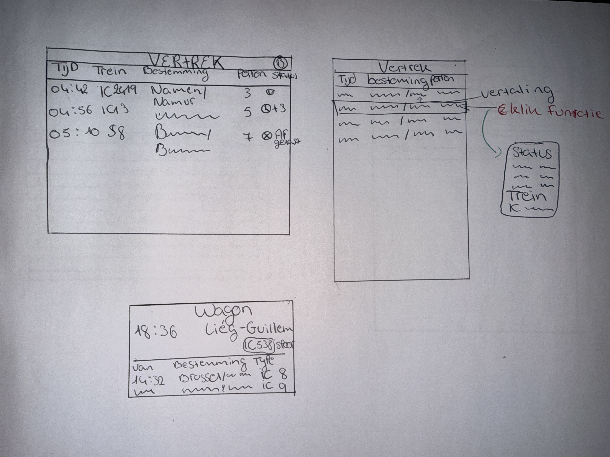
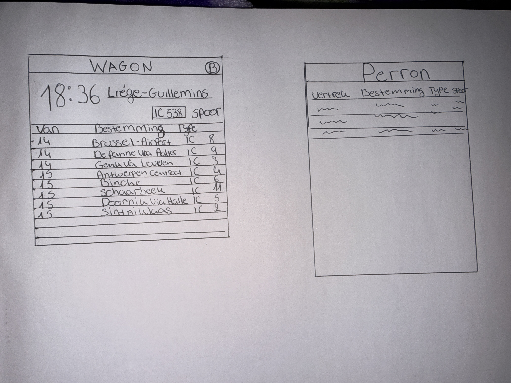

15 september 2025
Deze week startte het project Lost in Tra(i)nslation. Ik kreeg inzicht in de doelstelling: een interface ontwerpen die meertalige reizigers duidelijk en stressvrij begeleidt. Ik analyseerde bestaande vervoersinterfaces, zoals NMBS en MTA, en begon met eerste low-fidelity schetsen om mogelijke layouts te verkennen.


Deze eerste week ging vooral over begrijpen wat reizigers nodig hebben en hoe informatie gelezen wordt. Mijn low-fi schetsen hielpen om snel ideeën vast te leggen zonder tijd te verliezen. Volgende week wil ik meer structuur brengen in de wireframes en focussen op hiërarchie.